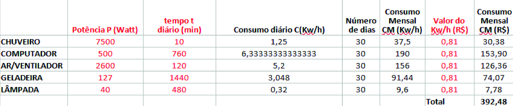
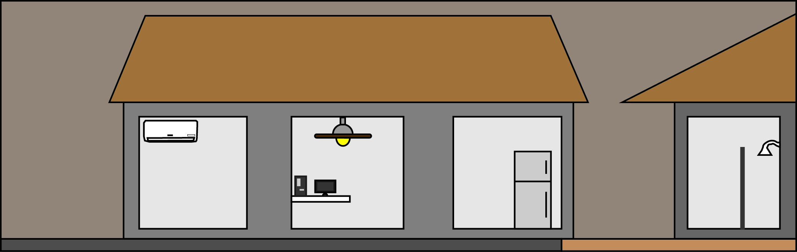

.
Clique aqui para voltar a pagina anterior
Clique aqui para ir ao resultado do trabalho (matematica)
Clique aqui para ir ao resultado do trabalho (portugues)
Clique aqui para ir ao resultado do trabalho (ferramenta de desenho)
Planilha de custos desenvolvida em matematica

Texto descritivo desenvolvido em portugues
Os dados do quadro referem-se ao consumo de energia de uma pessoa, em um mês, ao ultilizar quatro equipamentos. O chuveiro com a potência de 7500 watts e 10 minutos de uso diário consome 37,5 Kw/h ou R$ 30,37. Já um computador com a potência e 500 watts e 12 horas de uso consome 190 Kw/h ou R$153,90. Uma lâmpada com a potência de 40 watts e 8 horas de uso, consome 9,6 Kw/h ou R$7,76. Por fim uma geladeira que fica ligada o dia inteiro e tem a potência de 127 watts consome 91 Kw/h ou R$74,00
Desenho dos itens usados no trabalho desenvolvido em ferramenta de desenho

Clique aqui para ir ao topo da pagina